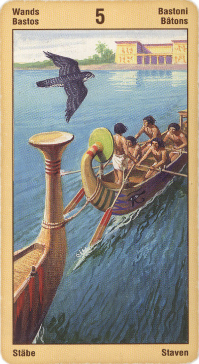

Пятёрка Жезлов
Прямое положение: имитация, как, например, показательный бой, сильная конкуренция или борьба, после которой приходят богатство и удача. Эта карта интерпретируется как признак золота, прибыли, изобилия.
Значение: Эта карта говорит о невыраженности желания, об отсутствии конкретной цели. Усилия людей, участвующих в решении вашего вопроса, направ¬лены в разные стороны, как и усилия людей, изображен¬ных на карте. Пока то, что вы делаете, не ведет ни к ка¬кому результату. Вам следует сформулировать свою цель более определенно - и заручиться поддержкой других людей.
Таким образом, в практической жизни ее смысл – “шуму много, а толку мало”. Если вы хотите начать какое-то дело, то Пятерка Жезлов обещает
лишь хлопоты и чьи-то обещания, но не результат. Если же вы, напротив, опасаетесь чего-то – например, что на вас подадут в суд, – то можете ничего не опасаться, потому что пустые хлопоты выпадут на долю ваших недоброжелателей.
Выпадая в раскладе, эта карта может свидетельствовать о том, что вы втянуты в борьбу с друзьями или коллегами по работе, либо в сражение за власть, либо в борьбу умов и идей. Если это так, то вам просто надо позаботиться о том, чтобы избежать эскалации напряженности.
Пятерка Жезлов - это брошенный нам вызов, приглашение померяться силами, посоревноваться, проверка: хватит ли у нас силенок? Нам предлагают попробовать свои силы - может быть, и вправду в каком-то состязании, споре, а может быть, и в некоем новом для нас деле. Шансы, какие предлагает эта карта, упускать не следует, потому что они дают нам возможность убедиться в своих способностях, осознать их.
"Лучшее- враг хорошего". Бой, соревнование (соперничество), принципиальный конфликт, борьба разных устремлений.
Ловушка - уклонение от борьбы, отказ от своей позиции прежде, чем начнется бой.
Пятерка жезлов символизирует выход из привычного социального контекста и попытку нахождения себя в ином контексте. Карта может означать разрыв связей, уход из дома, развал семьи. Вместе с тем, пятерка жезлов может открыть и новые горизонты или, по крайней мере, предоставить новые возможности в той или иной отдельно взятой сфере деятельности.
Борьба(Strite) это и неудовлетворенное желание, борьба с иллюзиями, подчас изнурительная работа, и конфликты, и преодоление препятствий.
Пятерка жезлов может указывать и на затаенную вражду, которая подчас может маскироваться под маской повышенной любезности.
Иногда указывает и на то, что в ближайшее время вы рискует стать жертвой интриги.
Как символ разрушения уюта четверичной схемы, пятерка может означать начало нестабильного, асоциального периода, потерю работы, тех или иных социальных гарантий и т. п. Эта карта может сигнализировать об определенных сложностях, связанных с вашим жильем. Пятерка жезлов является одной из карт, представляющих собой дополнительные факторы, на которые следует обращать внимание, если речь идет о возможном разводе.
Эта карта означает перемены и преобразования. Пятерка Посохов сигнализирует о том, что вскоре в вашей жизни один этап сменится другим.
Как правило, карты Посохов предсказывают перемены в материальной сфере: это либо переезд на новое место жительства, либо смена работы, а может быть - разрушение старых семейных отношений и создание новых.
Пятерка Посохов, выпавшая в раскладе на ситуацию, - свидетельство того, что спокойный и гармоничный этап вашего существования подошел к концу. Через некоторое время ваша налаженная жизнь даст трещину.
Конечно же такие преобразования никогда не бывают совершенно безболезненны: так и вам предстоит испытать немало горьких минут и неприятных эмоций, прежде чем вы создадите что-то новое на месте разрушенного старого.
В целом символ конкуренции.испытаний и жадности.Вы слишком хотите жить лучше. Чересчур высокие цели перед собой поставили.Они могут оказаться недостижимы. В делах будьте осторожны с конкурентами или просто коллегами по работе вас захотят обскакать. Ссоры, раздоры, дележ, карьеризм. Соревнования любого рода, в том числе и спортивные.
В перевернутом виде хлопот и шуму по-прежнему будет много, а результат для вопрошающего скорее неблагоприятный.
Традиционно эта карта ассоциируется с правовыми тяжбами и спорами. Поэтому стоящую перед вами проблему можно сформулировать примерно так: Как мне действовать? Что мне делать?
В перевернутом положении карта может означать мошенничество, противоречие, противодействие, запутанность отношений, неоднозначность социального положения, излишняя осторожность.
Отрицательное толкование: беды, победы конкурентов, интриги, судебный процесс, проигрыш.